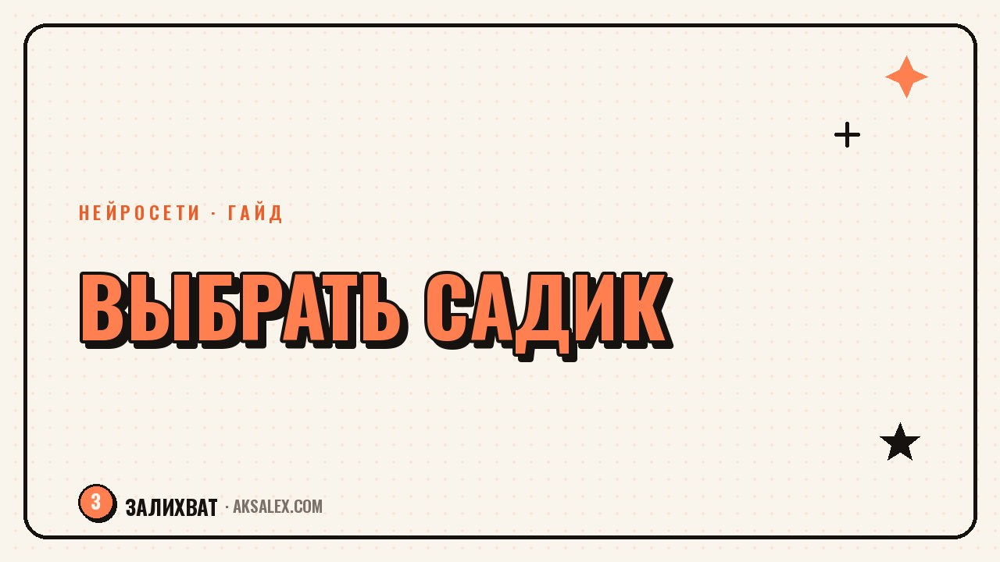

Нейросети помогут выбрать школу или садик для ребёнка

Выбор школы или садика - это десятки открытых вкладок: рейтинги, отзывы на форумах, сайты образовательных учреждений, группы в соцсетях. Нейросеть не примет решение за тебя и не знает реальную атмосферу в конкретном классе, но она здорово экономит время на черновой работе: собрать критерии, сравнить варианты по понятным параметрам и подготовить список вопросов, которые стоит задать на дне открытых дверей.
С чего начать: собрать свои критерии, а не чужой рейтинг
Главная ошибка при выборе школы - сразу идти смотреть рейтинги по ЕГЭ или олимпиадам, даже если ребёнку это пока не нужно. Рейтинг отражает чужие цели, а не твои. Прежде чем сравнивать варианты, полезно проговорить с нейросетью, что важно именно твоей семье: расстояние от дома, нагрузка, наличие группы продлённого дня, атмосфера, отношение к инклюзии.
Можно описать нейросети ситуацию: возраст ребёнка, особенности характера, рабочий график родителей, и попросить составить список из 8-10 критериев для сравнения. Дальше этот список становится таблицей, в которую ты вписываешь характеристики реальных школ или садиков рядом с домом.
Примеры критериев, которые часто забывают
- Как учреждение работает с детьми, которые медленнее адаптируются
- Есть ли группа продлённого дня и до какого часа она работает
- Как часто меняются воспитатели и учителя в начальной школе
- Какая реальная нагрузка на дом - сколько времени уходит на домашние задания
Как собрать и сравнить информацию о конкретных вариантах
Дальше нейросеть можно использовать как помощника для структурирования информации, которую ты сама собрала с сайтов школ, из родительских чатов и отзывов. Вставляешь текст страницы школы или скопированные отзывы и просишь выделить факты: программа, дополнительные занятия, стоимость, если это платное учреждение, отзывы о конкретных педагогах.
Это особенно удобно, когда вариантов много и объём текста большой - например, если смотришь пять школ сразу. Нейросеть сведёт разрозненные данные в одну таблицу, и дальше тебе останется только сравнить её визуально, а не перечитывать десять вкладок заново перед сном.
Нейросеть хороша в том, чтобы разложить информацию по полочкам. Она не была на родительском собрании и не видела, как учитель разговаривает с детьми - это узнаешь только сама, лично.
Какие вопросы задать на дне открытых дверей
Перед очным визитом полезно попросить нейросеть составить список вопросов под твою конкретную ситуацию - не общих фраз типа "какая программа обучения", а точечных, которые реально помогают понять атмосферу. Хороший список держится на 10-15 вопросах, иначе администрация устанет отвечать, а ты не успеешь послушать.
Вопросы, которые стоит задать лично
- Что происходит, если ребёнок не успевает за темпом класса или группы
- Как школа или садик реагирует на конфликты между детьми
- Сколько детей в классе или группе на одного педагога
- Какие дополнительные занятия входят в основную программу, а какие платные
- Как часто и в каком формате происходит связь с родителями
После визита стоит сразу же, пока свежи впечатления, продиктовать нейросети голосом всё, что запомнилось - вопросы, ответы, ощущения. Так получится конспект для сравнения разных школ, который не потеряется в памяти через неделю, когда визитов будет уже три или четыре.
Сравнение сервисов для сбора информации
Для разных задач при выборе школы подходят разные инструменты. Для структурирования текста и составления списков вопросов хватает любой крупной текстовой модели. Для поиска отзывов и рейтингов лучше работают сервисы с доступом в интернет, а не закрытые модели без браузера.
| Задача | Инструмент | Что получаешь | Ограничение |
|---|---|---|---|
| Составить критерии выбора | ChatGPT, Gemini | Список критериев под конкретную семью | Критерии общие, нужна своя правка |
| Найти отзывы и рейтинги | Яндекс Нейро, поиск с ИИ-ответом | Сводка отзывов с разных форумов | Не проверяет достоверность отзывов |
| Сравнить несколько школ | Любая модель + таблица | Наглядная таблица по критериям | Нужно вручную собрать исходные данные |
| Конспект впечатлений после визита | Голосовой ввод в заметки с ИИ | Быстрая запись без потери деталей | Требует сделать это сразу после визита |
Когда стоит остановиться и просто пойти посмотреть
Есть риск застрять в сравнении таблиц и отзывов настолько, что решение откладывается на месяцы. Если после двух-трёх дней сбора информации ты видишь, что три варианта примерно равны по критериям - дальше сравнивать бессмысленно, и настало время идти смотреть лично.
Личное впечатление от разговора с воспитателем или классным руководителем почти всегда весит больше любой таблицы. Нейросеть хорошо помогает не упустить важные вопросы и не забыть часть информации, но финальное решение держится на интуиции и на том, как ребёнок сам почувствует себя в этом месте - а это можно понять только вживую.
Частые вопросы
Может ли нейросеть сама подобрать лучшую школу по адресу?
Нет, она не владеет актуальной базой школ твоего района и не знает реальную атмосферу в классах. Нейросеть помогает собрать критерии и структурировать уже найденную тобой информацию, но выбор остаётся за родителями и желательно после личного визита.
Как использовать нейросеть, чтобы сравнить несколько садиков одновременно?
Собери информацию о каждом садике - с сайтов, из чатов, из отзывов - и попроси нейросеть свести её в одну таблицу по одинаковым критериям: расписание, питание, педагоги, стоимость. Так визуально сравнивать варианты будет намного проще, чем листать разные вкладки.
Стоит ли доверять отзывам о школах, которые нашла нейросеть в интернете?
Отзывы стоит воспринимать как ориентир, а не факт. Нейросеть может найти и свести отзывы с форумов, но не проверяет их достоверность и дату - старый негативный отзыв может не отражать текущую ситуацию в школе.
Какие вопросы важно задать на дне открытых дверей в школе?
Самые полезные вопросы касаются реальной практики: что происходит, если ребёнок не успевает, сколько детей на одного педагога и как школа работает с конфликтами. Нейросеть поможет составить такой список заранее, под твоего конкретного ребёнка.
Сколько времени разумно потратить на выбор школы с помощью нейросети?
Сбор информации и сравнение обычно занимает два-три дня, если не затягивать. Дальше лучше переходить к очным визитам, потому что личное впечатление от педагогов и атмосферы почти всегда важнее любой таблицы сравнения.
Раз тема оказалась полезной, вот что почитать следующим. Готовишься к теории в ГИБДД? Разбираем, как нейросети помогают разобрать билеты и подготовиться быстрее.
Читать статью →а не вручную